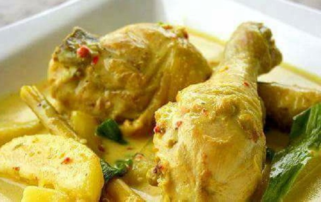

How to make Gulai Lemak

Recipe originally from Asian Food Network
Ingredients
- 0.5 chicken chopped into 16 pieces
- 2 cups coconut milk
- 1 stalk lemongrass bruised
- 1 turmeric leaf thinly sliced
- 3 tbsp coconut oil
- 6 chili padi
- 2 large red chilli
- 1cm fresh ginger
- 0.5 tbsp turmeric powder
- 2 shallots
- 4 cloves garlic
- 1 jug warm water
- salt and brown sugar to taste
Instructions
- Blend and fry spice paste
- In a blender, blend 6 chili padi, 1 large red chili, ginger, 0.5 tsp turmeric powder, shallots and garlic until smooth. If the mixture is too dry, you can use water to help you achieve a smooth consistency. In a pan of medium-high heat, fry spice page for 5 minutes.
- Mix chicken in spice paste
- Add bruised lemongrass and chicken into the pan and mix well
- Add coconut milk in chili paste
- Season to taste with salt and brown sugar if needed, then add turmeric leaves.
- Turn off heat and keep covered for another 5 minutes
- Season the curry and add turmeric leaves
- Plate and serve! Transfer dish into serving bowl and garnish with large red chili slices. Serve hot.